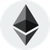

Welcome to the Top 5 Cryptocurrencies Website
Discover the most valuable cryptocurrencies in the market today.
Bitcoin (BTC)

Ethereum (ETH)
BNB
Cardano (ADA)
Solana (SOL)
Top 5 Cryptocurrencies
1. Bitcoin (BTC)
The pioneer of cryptocurrencies, Bitcoin is the digital gold of the
modern era. Created by the mysterious Satoshi Nakamoto, Bitcoin
introduced the world to blockchain technology. Known for its
decentralization and security, Bitcoin remains the most valuable and
trusted cryptocurrency. It’s a store of value, a medium of exchange,
and the foundation of the crypto revolution.
Read more about Bitcoin on CoinMarketCap
2. Ethereum (ETH)
The world’s most popular blockchain for decentralized applications
(dApps) and smart contracts. Ethereum isn't just a cryptocurrency;
it’s a platform for innovation. From powering NFTs to revolutionizing
DeFi, Ethereum continues to lead the charge in blockchain utility.
With the recent Ethereum 2.0 upgrade, it’s more scalable and
energy-efficient than ever.
Read more about Ethereum on CoinMarketCap
3. BNB
Formerly known as Binance Coin, BNB is more than just a utility token
for the Binance exchange. It powers the Binance Smart Chain (BSC), a
blockchain designed for low-cost, fast transactions and dApp
development. Whether you're paying fees on Binance or exploring the
vibrant DeFi ecosystem, BNB is an indispensable part of the crypto
landscape.
Read more about BNB on CoinMarketCap
4. Cardano (ADA)
A blockchain platform with a scientific approach, Cardano stands out
for its focus on sustainability, scalability, and security. Backed by
peer-reviewed research, it’s designed to be an efficient and
eco-friendly platform for dApps and smart contracts. Cardano’s
commitment to solving real-world problems makes it a standout project
in the crypto space.
Read more about Cardano on CoinMarketCap
5. Solana (SOL)
Solana (SOL) Known as the "Ethereum Killer," Solana is a
lightning-fast blockchain capable of processing thousands of
transactions per second at a fraction of the cost. Its efficiency has
made it a top choice for DeFi projects, NFTs, and gaming. With its
innovative Proof-of-History mechanism, Solana is redefining what’s
possible in blockchain technology.
Read more about Solana on CoinMarketCap